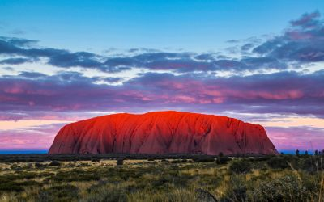
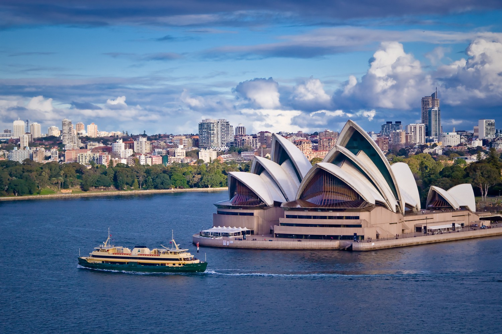

Australia is located in Oceania and is a democracy. Australia is the world’s 6th largest country by area, and the closest countries are papa new guinea, Indonesia, and East Timor. Australia has a population of 27 million people, and of these 27 million about 3,8% are indigenous.
Australia has a wide range of animal life, there likely is about 20 0,000 and 300,000 different species, around 100 000 of which have been do cumented. There are 250 species of nativ e mammals, 550 species of birds, 680 species of reptiles, 190 species of frogs, and more than 2000 species of fish . The remnants are all invertebrates and insects!
Uluru, also known as Ayers Rock, is a 600-million-year-old mountain, and a unique geological phenomenon. It is formed of conglomerate which changes colour according to the position of the sun. It's a sacred place for Aboriginals. The opera house in Sydney, which is mostly famous for its peculiar and iconic shape. The great barrier reef, stretching over 2300 kilometres making it the largest coral reef system in the world, is also home to a various range of marine life. It has over 9000 known species and has likely many more.  People and culture
The indigenous people in Australia are called the Aboriginals. They have lived in Australia for at least 45 000 to 50 000 years, though some scientists claim they arrived as early as 65 000 to 80 000 years ago.
